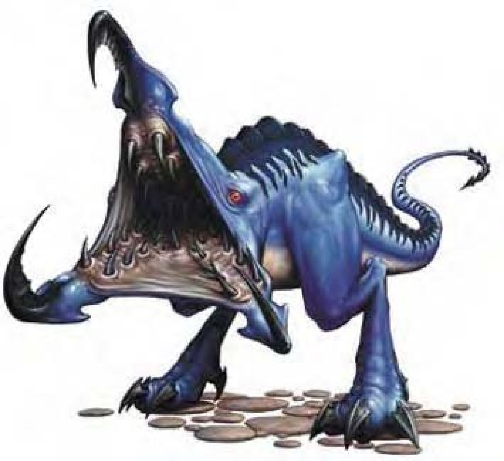

| 资料栏位 | 灵褫兽 (Ethereal Marauder) 中型魔法兽 (外界) |
| 生命骰 | 2d10 (11HP) |
| 先攻 | +5 |
| 速度 | 40英尺 (8格) |
| 防御等级 | 14 (+1敏捷、+3天生)、接触11、措手不及13 |
| 基本攻击/擒抱 | +2 / +4 |
| 攻击 | 啮咬+4近战 (1d6+3) |
| 全力攻击 | 啮咬+4近战 (1d6+3) |
| 占据/触及 | 5英尺 / 5英尺 |
| 特殊攻击 | ― |
| 特殊能力 | 黑暗视觉60英尺、幻化灵体 |
| 豁免 | 强韧+3、反射+4、意志+1 |
| 属性 | 力量14、敏捷12、体质11、智力7、感知12、魅力10 |
| 技能 | 聆听+5、潜行+5、侦察+4 |
| 专长 | 精通先攻 |
| 环境 | 灵界 |
| 组织 | 单独 |
| 挑战级数 | 3 |
| 宝藏 | 无 |
| 阵营 | 总是绝对中立 |
| 进化 | 3-4HD (中型)；5-6HD (大型) |
| 等级修正值 | ― |
灵褫兽的外型像是一只两只脚的蜥蜴，有条弯曲的长尾巴。最让人觉得恐怖的是他们没有头，整个身体前端就是一张三角形的血盆大口，里面长满一排排漆黑发亮的牙齿，嘴巴三边上各长有一只眼睛。
灵褫兽是攻击性相当强的掠食者，会从灵界快速跳到物质界攻击目标。
灵褫兽的栖息地和猎场都在灵界，只在偶尔追捕猎物所需才会来到物质界。长时间以来因为观察不易，关于灵褫兽行为方面的信息非常有限。一般认为灵褫兽没有任何社会组织或文化，完全受求生本能所驱使。
灵褫兽的颜色介于鲜蓝色到深紫色，身高约4英尺，从头到尾长度7英尺，重达200磅。
灵褫兽不会说任何已知的语言。然而，根据某些在物质界遭受攻击的受害者指出，灵褫兽会发出奇怪的尖叫声，频率会随速度和健康状况而改变。
战斗一旦锁定猎物，灵褫兽会突然出现在物质界，趁敌人陷入措手不及时发动攻击，用力咬上一口然后再退回灵界。伤势严重时，灵褫兽会尽速逃回灵界，无心战斗。
幻化灵体 (超自然)：灵褫兽可以从灵界进入物质界，使用此能力属于即时动作，而返回灵界则是移动动作。除此之外，此能力效果与“幻化灵体”法术相同 (施法者等级15)。
技能：灵褫兽在进行“聆听”、“潜行”和“侦察”检定时具有+2种族加值。